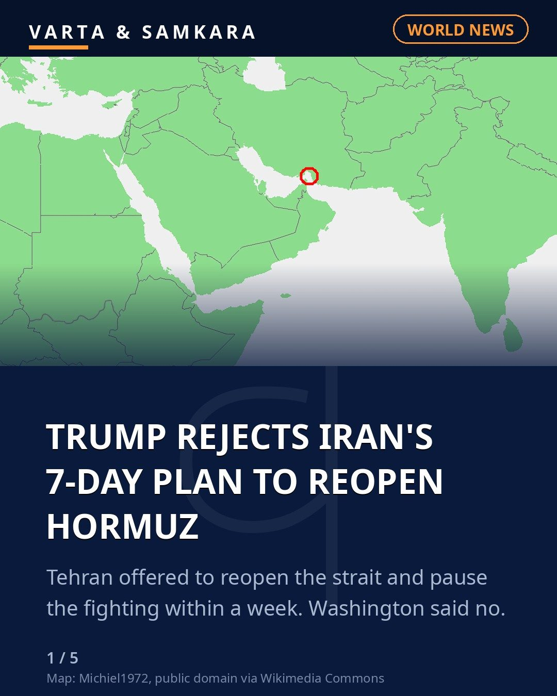
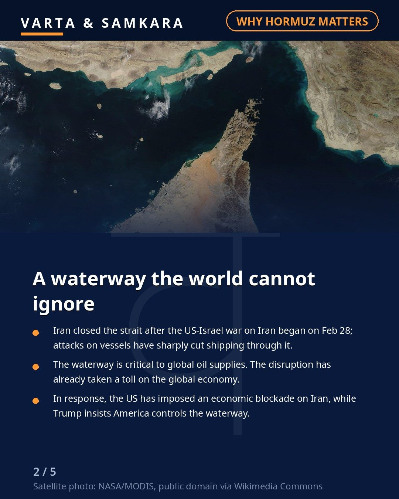
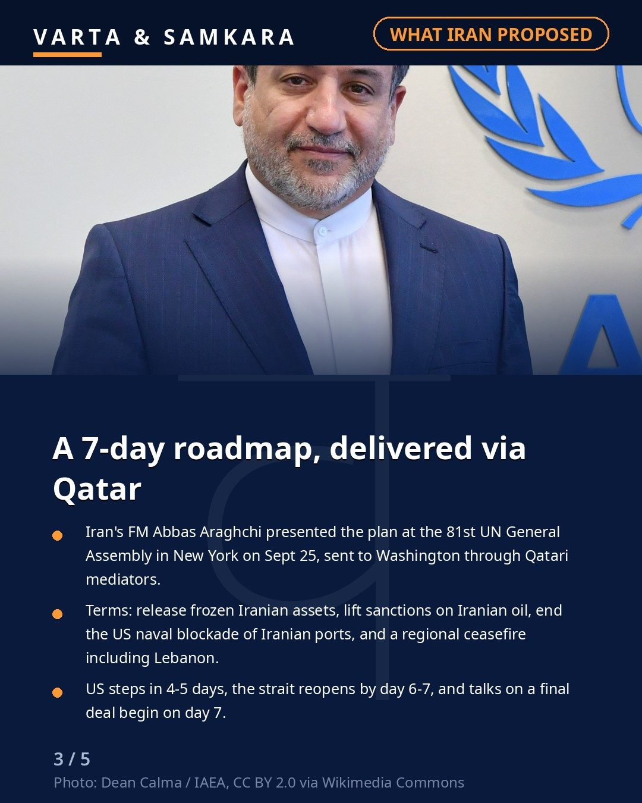
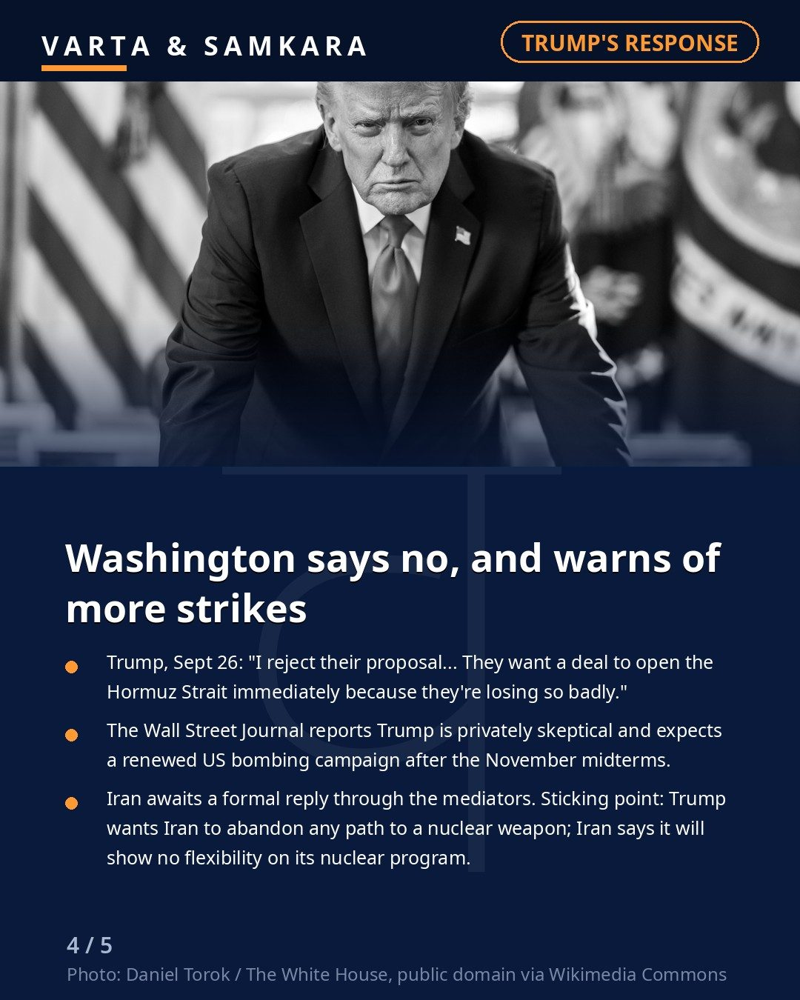
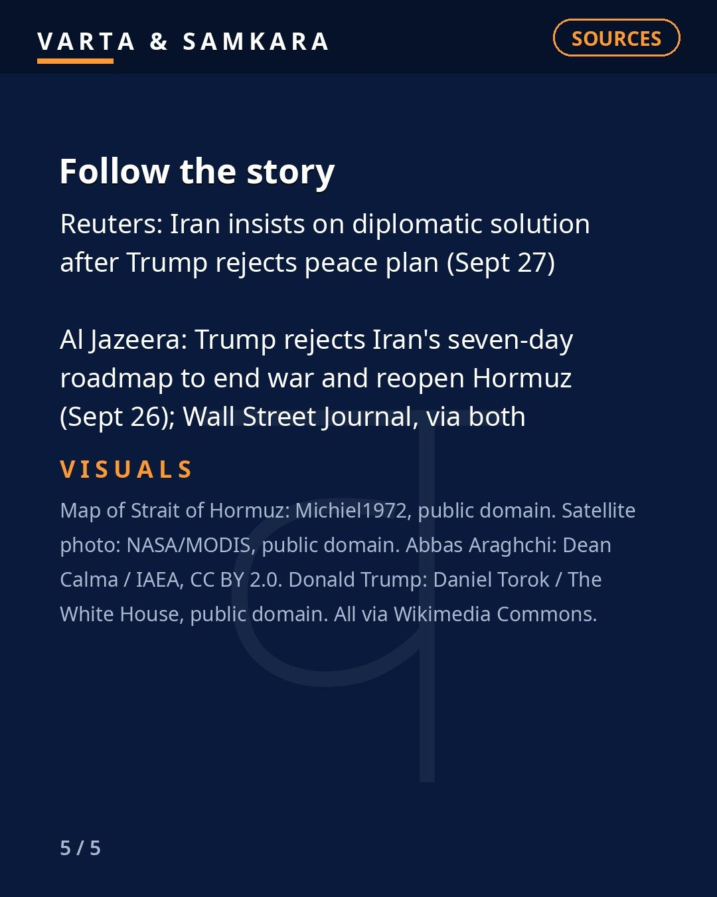

![BRAZIL VOTES TODAY: Lula vs Flavio Bolsonaro first-round explainer (Oct 4 first round; Saturday final polls: Datafolha Lula 45%/Flavio 42%, runoff 47%/46%; CNT/MDA Lula 47.8%/42.1%, runoff 47.3%/43.1%; Quaest Lula 46%/45%, runoff Flavio 44%/42%; runoff Oct 25 if nobody tops 50% valid votes; US suspended consular services + Australia closed Brasilia embassy Friday over unspecified security concerns; federal police raids in Sao Paulo/Brasilia found no corroborating evidence; Lula's party called closures "unprecedented"; Trump praised Flavio, no formal endorsement)](../../assets/placeholder.svg)
TRUMP REJECTS IRAN'S 7-DAY PLAN TO REOPEN THE STRAIT OF HORMUZ

US President Donald Trump has publicly rejected Iran's seven-day roadmap to reopen the Strait of Hormuz, dismissing the proposal a day after it was presented through Qatari mediators.
Iran had proposed the plan at the UN General Assembly: the US would release frozen Iranian assets, lift sanctions on Iranian oil and end its naval blockade of Iranian ports, in exchange for reopening the strait and a regional ceasefire including Lebanon. Under the timeline presented on September 25, American steps would take four to five days, the strait would reopen by day six or seven, and talks on a final deal would begin on day seven.
"I reject their proposal... They want a deal to open the Hormuz Strait immediately because they're losing so badly," Trump said on September 26.
The nuclear sticking point
According to the Wall Street Journal, Trump is privately skeptical that Tehran will meet his demands, and expects a renewed US bombing campaign after the November midterms. Iran, for its part, says it is still waiting for a formal reply through the mediators.
The core impasse remains the nuclear question. Trump is demanding that Iran permanently abandon any path to a nuclear weapon, while Tehran says it will show no flexibility on its nuclear programme, including uranium enrichment.
The Strait of Hormuz carries a large share of the world's seaborne oil, and its closure has kept global energy markets on edge. With both sides holding firm, the standoff shows little sign of breaking soon.
In pictures




Source: Reuters, Al Jazeera
Visuals: Map by Michiel1972 (public domain); satellite photo by NASA/MODIS (public domain); Abbas Araghchi photo by Dean Calma / IAEA (CC BY 2.0); Donald Trump photo by Daniel Torok / The White House (public domain), all via Wikimedia Commons.
PoliticsWorld#BreakingNews#WorldNews#Iran#USA#Trump#StraitOfHormuz#MiddleEast#UNGA#OilPrices#Geopolitics#CurrentAffairs#InternationalNews
See the original reel / carousel with motion graphics on Instagram.
View on Instagram